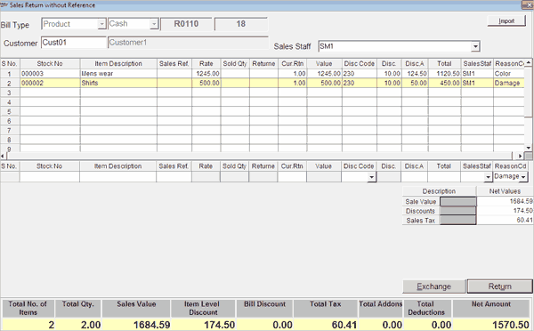

Sales Return without Reference
This option is used to carry out sales returns and exchanges of merchandise where the customer who is returning the merchandise does not produce the bill (invoice/ cash memo) and if the store policy allows such returns. Here, you can record the sales returns and exchanges of items without specifying the original bill details. The window can be invoked either by clicking the button Rtn. W/o Ref. in the toolbar or pressing Alt+5 in the Billing window. The flexibility of entering discounts, add-ons and deductions are also available.
In sales returns without reference, you have an option to load/ import item details from a PDT file. This is very useful for returns in large volumes.
The Sales Return without Reference window is displayed.

Select either Product or Service, as the type of the bill being returned.
Select either Cash or Credit, as the transaction type of the bill being returned.
The document prefix set for bill return gets displayed in the first field. The document number for the bill return is generated automatically and is displayed in the next field.
Customer: Enter the customer code or press F2 to browse and select the customer code. Recording the customer code helps in generating accurate Customer-wise Off-take Report, as returns should be reduced from the total quantity purchased by the customer.
The Customer Name of the selected Customer Code is displayed.
Sales Staff: Select the sales man ID of the salesperson who was involved in the billing.
Note: The return will be listed in the sales-man register and the return value will be reduced from the net sale value for the sales staff.
Item Selection: There are two ways to select the items for return.
-
Enter the stock number or scan the item in the direct entry grid. You can accept the details like stock no., item description, rate and quantity and so on, of each item to be returned.
-
Select the option Import to load/ import the item details. The PDT Import window is displayed on selecting this option. There are two ways of importing item details as follows.
-
-
Importing from file
Note: In case Batch, Grade or Location is enabled then appropriate formats are available. The formats have to be enabled in PDT File Type Restriction menu under Setup. Click to view the formats.
-
Importing from transaction
Item Details Grid: Displays the details of the items selected for return.
Note: In case Batch, Grade or Location is enabled then the item details grid and direct entry grid would contain Batch, Grade and Location columns respectively. Click here to view the detail part of the Sales Return with out reference window.
Note: If multiple prices are available for an item, a Browse is displayed (based on system parameter settings for Item Classification). Select the price from the list.
Ctrl+4: To make AddOns And Deductions
Sales Return Totals: The total sale value, discount, sales tax, add-ons and deductions (if any) are displayed at the bottom right corner of the window.
Sales Return Totals Grid: The details like total quantity of the items selected, total sale value, total tax, total addons and deductions, net amount to be paid to the customer and so on are displayed at the bottom part of the window. Each field is explained below.
Total No. of Items: The total number of line items selected for return is displayed in this field.
Total Qty: The total quantity of items selected for return is displayed in this field.
Sale Value: The total sale value of the items selected for return is displayed in this field.
Item Level Discount: The total of item level discounts is displayed.
Bill Discount: The total of bill level discounts (item level discounts are not included) is displayed.
Total Tax: The total sales tax is displayed. The Total Tax is calculated as follows.
Total Tax = Total Sales Tax on items (both Tax inclusive items and Tax exclusive items) + Tax on Add-ons
Total Addons: The total value of add-ons is displayed.
Total Deductions: The total value of deductions is displayed.
Net Amount: The net amount of the sales return document is displayed in this field. The Net Amount is calculated as follows.
Net Amount = (Total Sales value + Total Add-ons + Total Sales Tax) - (Total Discounts + Total Deductions)
The Total Discounts is the sum of Total Item level discounts & Bill level discount.
Net Amount is calculated by rounding off the calculated value to its nearest integer value, if Bill round off is catalogued.
Exchange: Click this button or press Alt + E to open the Exchange Bill window, if the customer is purchasing some other merchandise in exchange.
Return: Click this button or press Alt + U, if the items are only returned and no other item is purchased by the customer in exchange. Click here to know how the Bill return value is handled.